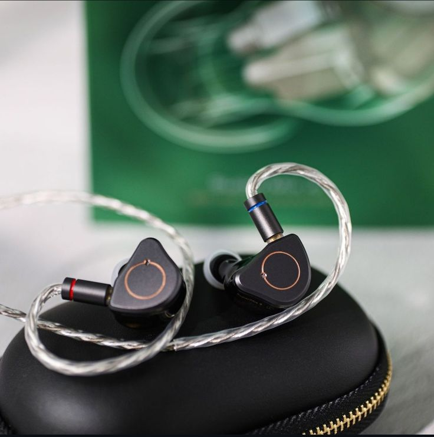
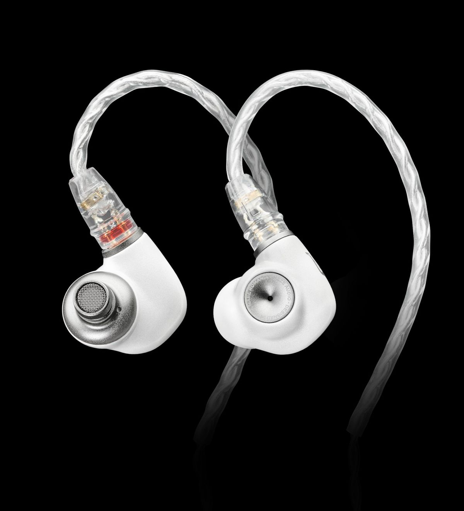
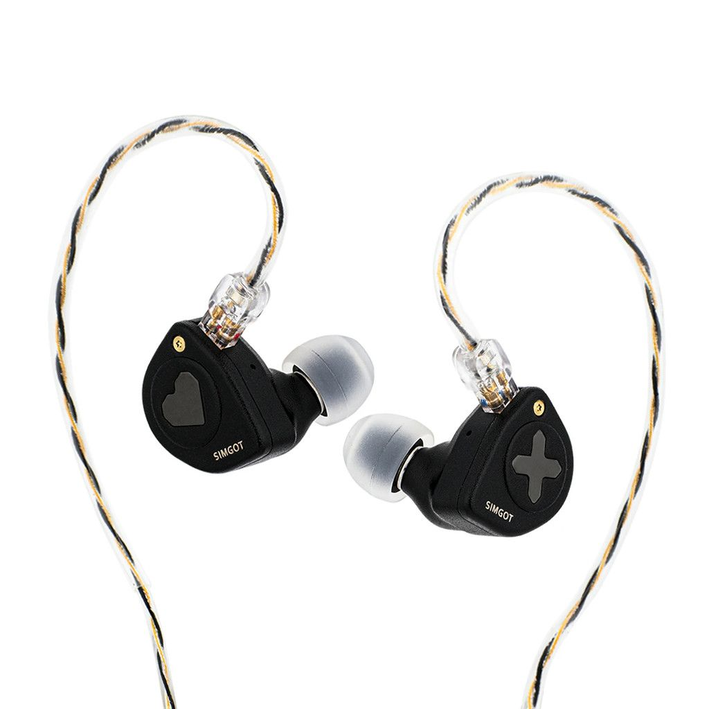
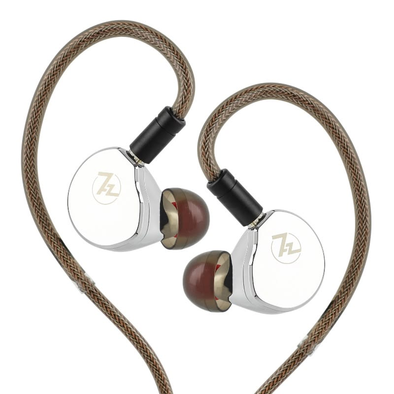
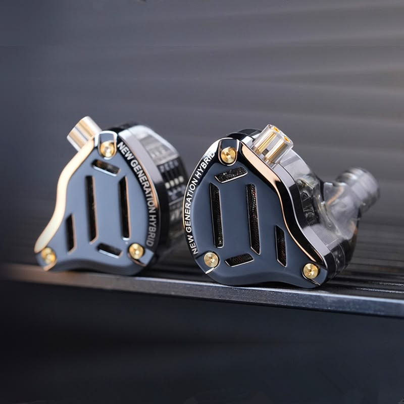

| Product | Driver | Freq | Imp | Sens | Signature | Best For |
|---|---|---|---|---|---|---|
| SIMGOT SuperMix 4 | 4-Driver Hybrid | 8Hz–40kHz | 7.2Ω | 120dB | Balanced | Audiophile |
| Sennheiser IE 200 | Single 7mm DD | 6Hz–20kHz | 18Ω | 119dB | Neutral | Vocals |
| Meze Audio Alba | Single DD | 15Hz–25kHz | 32Ω | 109dB | Warm | Relaxed |
| SIMGOT EW300 | Tri-brid | 8Hz–40kHz | 16Ω | 122dB | Energetic | Pop/Gaming |
| 7Hz x Crinacle Zero:2 | Single 10mm DD | 10Hz–20kHz | 32Ω | 108dB | Balanced | Budget |
| Tangzu Wan'er S.G. 2 | Single DD | 20Hz–20kHz | 19Ω | 113dB | Vocal | Beginners |
| AFUL Performer 7 | Hybrid | 5Hz–35kHz | 11Ω | 109dB | Reference | Studio |
| 7Hz x Crinacle Diablo | Planar | 5Hz–40kHz | 16Ω | 94dB | Detailed | Rock/Metal |
| Letshuoer S12 Ultra | Planar | 20Hz–40kHz | 16Ω | 102dB | Fast | Technical |
| KZ ZS10 Pro 2 | Hybrid | 20Hz–40kHz | 26Ω | 108dB | V-shaped | Bass/Gaming |

The SIMGOT SuperMix 4 is one of the most technically impressive hybrid IEMs in its price range. It combines four different driver technologies into a single shell to achieve exceptional clarity, balance, and detail retrieval. The bass is tight and controlled, delivering satisfying impact without overwhelming the midrange. Vocals sound natural and lifelike, making both male and female voices stand out beautifully. The treble extends effortlessly while remaining smooth and non-fatiguing. Instrument separation is outstanding, allowing listeners to hear every layer of complex recordings. Its expansive soundstage creates an immersive listening experience rarely found at this price. Build quality is premium, featuring lightweight resin shells and a comfortable ergonomic design. The detachable cable allows easy upgrades and long-term durability. It performs equally well with music, movies, and competitive gaming. Thanks to its excellent tuning, it handles nearly every music genre with confidence. Audiophiles appreciate its neutral yet engaging sound signature. Whether paired with a portable DAC or a smartphone, the SuperMix 4 consistently delivers flagship-like performance. It is widely regarded as one of the best value hybrid IEMs available today.
| Driver Configuration | 1 Dynamic + 1 Balanced Armature + 1 Planar + 1 PZT |
| Frequency Response | 8Hz – 40kHz |
| Impedance | 7.2Ω |
| Sensitivity | 120dB/Vrms |
| Cable | Detachable Silver-Plated |
| Connector | 0.78mm 2-Pin |
| Plug | 3.5mm |
| Housing | Medical-grade Resin |
| Sound Signature | Balanced |
| Bass | Tight & Fast |
| Midrange | Natural |
| Treble | Detailed |
| Soundstage | Wide |
| Imaging | Excellent |
| Comfort | Excellent |
| Weight | Lightweight |
Audiophiles seeking a highly detailed, balanced, all-round IEM for every music genre, gaming, and critical listening.
BUY ON AMAZONThe Sennheiser IE 200 delivers classic Sennheiser tuning in a compact and affordable package. Equipped with a precision-engineered 7mm TrueResponse dynamic driver, it offers exceptionally natural sound with excellent tonal balance. Bass remains clean and controlled without excessive emphasis. The midrange is smooth, allowing vocals and acoustic instruments to sound realistic and engaging. Treble is airy, refined, and free from harshness, making it comfortable for extended listening sessions. Its lightweight ergonomic shell provides excellent comfort for long hours of use. The detachable MMCX cable adds flexibility and longevity. Soundstage is spacious, while imaging remains accurate enough for immersive music and gaming. It performs especially well with jazz, classical, and acoustic recordings. Build quality reflects Sennheiser's reputation for durability and precision engineering. Although not bass-heavy, it offers excellent overall balance and refinement. Its forgiving tuning makes it suitable for nearly every listener. The IE 200 stands out as one of the best entry-level audiophile IEMs on the market.
| Driver | 7mm TrueResponse Dynamic |
| Frequency Response | 6Hz–20kHz |
| Impedance | 18Ω |
| Sensitivity | 119dB |
| Cable | Detachable |
| Connector | MMCX |
| Plug | 3.5mm |
| Housing | Polymer |
| Sound Signature | Neutral |
| Bass | Controlled |
| Midrange | Rich |
| Treble | Smooth |
| Soundstage | Spacious |
| Imaging | Accurate |
| Comfort | Excellent |
| Isolation | Very Good |
Perfect for listeners who enjoy balanced, natural sound with exceptional vocal performance and long listening comfort.
BUY ON AMAZON
The Meze Audio Alba combines elegant European craftsmanship with a warm and musical sound signature. Designed for comfort and everyday listening, it features a carefully tuned dynamic driver that delivers rich bass, smooth mids, and relaxed treble. Vocals sound intimate and expressive while instruments maintain excellent tonal accuracy. Rather than focusing solely on technical performance, the Alba emphasizes musical enjoyment and emotional engagement. The lightweight aluminum construction provides durability without sacrificing comfort. Its ergonomic shell fits securely and comfortably for extended listening sessions. The detachable cable allows easy replacement or upgrades. The tuning is forgiving, making poorly recorded tracks more enjoyable than highly analytical IEMs. Bass is full-bodied without becoming overpowering. Treble remains smooth, reducing listening fatigue during long sessions. Imaging is accurate and the soundstage feels open enough for immersive listening. The Meze Audio Alba is an excellent choice for users seeking a relaxing yet premium listening experience. It offers impressive craftsmanship and dependable performance at a competitive price.
| Driver | Dynamic Driver |
| Frequency Response | 15Hz–25kHz |
| Impedance | 32Ω |
| Sensitivity | 109dB |
| Cable | Detachable |
| Connector | 2-Pin |
| Plug | 3.5mm |
| Housing | Aluminum Alloy |
| Sound Signature | Warm |
| Bass | Rich |
| Midrange | Smooth |
| Treble | Relaxed |
| Soundstage | Open |
| Imaging | Good |
| Comfort | Excellent |
| Isolation | Good |
Ideal for listeners who value musicality, comfort, and a warm, relaxing sound signature for everyday listening.
BUY ON AMAZON
The SIMGOT EW300 is a premium tri-brid IEM that combines a dynamic driver, planar driver, and PZT driver to deliver an exciting yet refined listening experience. It is designed for listeners who want powerful bass, crisp vocals, and sparkling treble without sacrificing detail. The dynamic driver produces deep and punchy low frequencies, while the planar driver adds exceptional speed and clarity to the mids. The PZT driver enhances the upper frequencies, creating excellent extension and airiness. Instrument separation is impressive, making complex tracks sound clean and organized. The wide soundstage provides an immersive experience for both music and gaming. Its lightweight CNC-machined metal shells offer excellent durability while remaining comfortable during long listening sessions. The detachable 0.78mm 2-pin cable allows easy upgrades and replacement. The EW300 is efficient enough to run from smartphones but scales noticeably with portable DACs and amplifiers. Whether listening to EDM, rock, pop, or orchestral music, it consistently delivers engaging and energetic performance. Its excellent balance of technical performance and musical enjoyment makes it one of the best mid-range IEMs available.
| Driver Configuration | 1 Dynamic + 1 Planar + 1 PZT |
| Frequency Response | 8Hz–40kHz |
| Impedance | 16Ω |
| Sensitivity | 122dB |
| Cable | Detachable Silver-Plated |
| Connector | 0.78mm 2-Pin |
| Plug | 3.5mm |
| Housing | CNC Aluminum Alloy |
| Sound Signature | Energetic U-Shaped |
| Bass | Deep & Punchy |
| Midrange | Clean |
| Treble | Crisp & Extended |
| Soundstage | Wide |
| Imaging | Excellent |
| Comfort | Very Good |
| Isolation | Good |
Perfect for listeners who enjoy energetic sound with strong bass, sparkling highs, and excellent performance for gaming, pop, EDM, and rock.
BUY ON AMAZONThe 7Hz x Crinacle Zero:2 is one of the best budget IEMs available, offering exceptional sound quality at an affordable price. Developed in collaboration with audio reviewer Crinacle, it features an improved 10mm dynamic driver with enhanced bass and refined tuning compared to its predecessor. The bass is deeper and more impactful while remaining controlled and clean. The midrange delivers natural vocals with excellent clarity, making both male and female voices sound lifelike. Treble is smooth, avoiding harshness while maintaining enough detail for enjoyable listening. Despite its budget-friendly price, the Zero:2 offers impressive instrument separation and imaging. Its lightweight resin shells ensure excellent comfort for extended listening sessions. The detachable cable provides flexibility for upgrades and improved durability. It performs well across various genres, including pop, rock, acoustic, and hip-hop. Easy to drive from smartphones, laptops, and portable DACs, it is an outstanding entry point into the world of high-quality IEMs. Its exceptional price-to-performance ratio has made it a favorite among beginners and experienced audiophiles alike.
| Driver | 10mm Dynamic Driver |
| Frequency Response | 10Hz–20kHz |
| Impedance | 32Ω |
| Sensitivity | 108dB |
| Cable | Detachable |
| Connector | 0.78mm 2-Pin |
| Plug | 3.5mm |
| Housing | Medical-Grade Resin |
| Sound Signature | Balanced with Enhanced Bass |
| Bass | Punchy |
| Midrange | Natural |
| Treble | Smooth |
| Soundstage | Moderate |
| Imaging | Good |
| Comfort | Excellent |
| Isolation | Very Good |
Ideal for beginners looking for their first audiophile IEM with balanced sound, excellent comfort, and exceptional value under a budget.
BUY ON AMAZONThe Tangzu Wan'er S.G. 2 is an upgraded version of Tangzu's popular entry-level IEM, delivering warm, natural sound at an affordable price. Equipped with a refined dynamic driver, it focuses on rich vocals and enjoyable musicality rather than purely analytical performance. The bass is smooth and controlled, providing enough impact without overpowering the mids. Vocals are the highlight of the tuning, sounding intimate, clear, and emotionally engaging. Treble remains relaxed, making the earphones comfortable for extended listening without fatigue. The lightweight ergonomic shells provide excellent comfort and passive noise isolation. The detachable cable allows easy upgrades while extending product longevity. Its forgiving tuning makes compressed music sound pleasant and enjoyable. Although not designed for critical studio monitoring, it excels in casual everyday listening. It works exceptionally well with vocal-heavy genres, acoustic music, podcasts, and streaming content. Easy to power from any smartphone or portable device, the Wan'er S.G. 2 is a fantastic choice for listeners seeking warm and enjoyable sound without spending much.
| Driver | Dynamic Driver |
| Frequency Response | 20Hz–20kHz |
| Impedance | 19Ω |
| Sensitivity | 113dB |
| Cable | Detachable |
| Connector | 0.78mm 2-Pin |
| Plug | 3.5mm |
| Housing | Lightweight Resin |
| Sound Signature | Warm |
| Bass | Smooth |
| Midrange | Vocal-Focused |
| Treble | Relaxed |
| Soundstage | Good |
| Imaging | Good |
| Comfort | Excellent |
| Isolation | Good |
Perfect for casual music lovers who enjoy warm vocals, comfortable listening sessions, podcasts, acoustic music, and everyday use without listener fatigue.
BUY ON AMAZONThe AFUL Performer 7 is a flagship-grade hybrid IEM engineered for audiophiles who demand exceptional technical performance and natural tonal balance. Featuring one dynamic driver and six balanced armature drivers, it delivers remarkable clarity, speed, and precision across the entire frequency range. The bass is deep, textured, and tightly controlled, providing satisfying impact without masking the midrange. Vocals are rich, lifelike, and exceptionally detailed, while instruments are reproduced with outstanding realism. The treble extends effortlessly, offering sparkle and air without becoming harsh or fatiguing. One of its greatest strengths is its expansive soundstage, allowing every instrument to occupy a precise position within the mix. Imaging accuracy and instrument separation are among the best in its class, making complex orchestral and live recordings sound incredibly immersive. The ergonomic resin shells provide excellent comfort and passive noise isolation for long listening sessions. Its detachable 2-pin cable allows easy upgrades and ensures long-term durability. The Performer 7 scales beautifully with high-quality DACs and amplifiers, rewarding listeners with even greater detail and dynamic range. It is equally impressive for studio monitoring, critical listening, and pure musical enjoyment. Overall, the AFUL Performer 7 stands as one of the finest hybrid IEMs available in its price category.
| Driver Configuration | 1 Dynamic + 6 Balanced Armature |
| Frequency Response | 5Hz–35kHz |
| Impedance | 11Ω |
| Sensitivity | 109dB |
| Cable | Detachable High-Purity Cable |
| Connector | 0.78mm 2-Pin |
| Plug | 3.5mm |
| Housing | Medical-Grade Resin |
| Sound Signature | Reference Balanced |
| Bass | Deep & Controlled |
| Midrange | Rich & Natural |
| Treble | Extended & Smooth |
| Soundstage | Extremely Wide |
| Imaging | Flagship-Level |
| Comfort | Excellent |
| Isolation | Excellent |
Ideal for audiophiles, studio professionals, and critical listeners seeking reference-quality sound with exceptional detail, imaging, and tonal accuracy.
BUY ON AMAZON
The 7Hz x Crinacle: Diablo is a premium planar magnetic IEM created for listeners who crave explosive dynamics, deep bass, and outstanding technical performance. Its large planar driver produces lightning-fast transients and exceptional detail retrieval while maintaining impressive tonal balance. Bass reaches incredibly deep with excellent texture and authority, making electronic, rock, and cinematic music especially engaging. The midrange remains clean and articulate, allowing vocals and instruments to cut through the mix with clarity. Treble is crisp, airy, and highly resolving, revealing subtle details often missed by conventional dynamic drivers. The Diablo also offers a spacious soundstage with precise imaging, creating an immersive three-dimensional listening experience. Built with premium materials, the shells feel solid and comfortable for extended use. The detachable cable ensures flexibility for upgrades and replacements. Although efficient enough for portable devices, the Diablo benefits noticeably from a dedicated DAC or amplifier. Its combination of speed, power, and detail makes it an outstanding performer for both music and gaming. Overall, it is one of the strongest planar IEMs for listeners seeking energetic, high-resolution audio.
| Driver | 14.5mm Planar Magnetic |
| Frequency Response | 5Hz–40kHz |
| Impedance | 16Ω |
| Sensitivity | 94dB |
| Cable | Detachable Silver-Plated |
| Connector | 0.78mm 2-Pin |
| Plug | 3.5mm |
| Housing | CNC Metal |
| Sound Signature | Energetic |
| Bass | Powerful |
| Midrange | Detailed |
| Treble | Airy |
| Soundstage | Wide |
| Imaging | Excellent |
| Comfort | Very Good |
| Isolation | Good |
Perfect for listeners who enjoy high-energy music, fast planar performance, deep bass, and exceptional technical resolution.
BUY ON AMAZONThe Letshuoer S12 Ultra is an upgraded planar magnetic IEM designed for listeners who prioritize speed, detail, and accuracy. Equipped with a large 14.8mm planar driver, it delivers exceptionally fast transients and outstanding clarity across the frequency spectrum. Bass is tight, controlled, and well-defined rather than overly emphasized, making it suitable for both analytical and musical listening. The midrange reproduces vocals with excellent transparency, while the treble extends effortlessly, providing remarkable air and micro-detail. Instrument separation is outstanding, allowing every note to remain distinct even in busy recordings. The soundstage is spacious and immersive, creating a realistic listening experience for orchestral, jazz, and live performances. Its lightweight CNC-machined aluminum shells provide both durability and long-term comfort. The detachable 2-pin cable allows users to upgrade cables according to their preferences. While it performs well with portable devices, pairing it with a quality DAC unlocks its full potential. The S12 Ultra is widely respected among audiophiles for its impressive balance between technical performance and musicality. It remains one of the finest planar magnetic IEMs available today.
| Driver | 14.8mm Planar Magnetic |
| Frequency Response | 20Hz–40kHz |
| Impedance | 16Ω |
| Sensitivity | 102dB |
| Cable | Detachable Silver-Plated |
| Connector | 0.78mm 2-Pin |
| Plug | 3.5mm |
| Housing | CNC Aluminum |
| Sound Signature | Neutral Bright |
| Bass | Tight |
| Midrange | Transparent |
| Treble | Highly Detailed |
| Soundstage | Spacious |
| Imaging | Excellent |
| Comfort | Excellent |
| Isolation | Good |
Excellent for critical listening, classical music, jazz, instrumental recordings, and listeners who appreciate speed, clarity, and technical precision.
BUY ON AMAZON
The KZ ZS10 Pro 2 is an upgraded hybrid IEM that delivers impressive performance at an affordable price. Featuring one dynamic driver and four balanced armature drivers, it produces a lively V-shaped sound signature with impactful bass, detailed mids, and sparkling highs. The bass is energetic and powerful, making modern music genres highly enjoyable. Vocals remain clear despite the elevated low-end, while the treble adds excitement and crispness to the overall presentation. Instrument separation is surprisingly good for its price, allowing listeners to distinguish individual sounds with ease. The lightweight resin and metal construction provides durability while maintaining excellent comfort during long listening sessions. The detachable cable supports future upgrades and replacement. The ZS10 Pro 2 is easy to drive from smartphones, gaming devices, and portable DACs. Its engaging tuning makes it particularly enjoyable for gaming, movies, EDM, hip-hop, and pop music. Offering impressive technical performance for its price, it remains one of the strongest value-oriented hybrid IEMs available. For users seeking exciting sound without spending a fortune, the ZS10 Pro 2 is an excellent choice.
| Driver Configuration | 1 Dynamic + 4 Balanced Armature |
| Frequency Response | 20Hz–40kHz |
| Impedance | 26Ω |
| Sensitivity | 108dB |
| Cable | Detachable |
| Connector | 0.75mm 2-Pin |
| Plug | 3.5mm |
| Housing | Zinc Alloy + Resin |
| Sound Signature | V-Shaped |
| Bass | Powerful |
| Midrange | Clear |
| Treble | Bright |
| Soundstage | Wide |
| Imaging | Good |
| Comfort | Very Good |
| Isolation | Good |
A great choice for gamers, bass lovers, and everyday listeners who enjoy energetic, V-shaped tuning with strong value and versatility.
BUY ON AMAZON